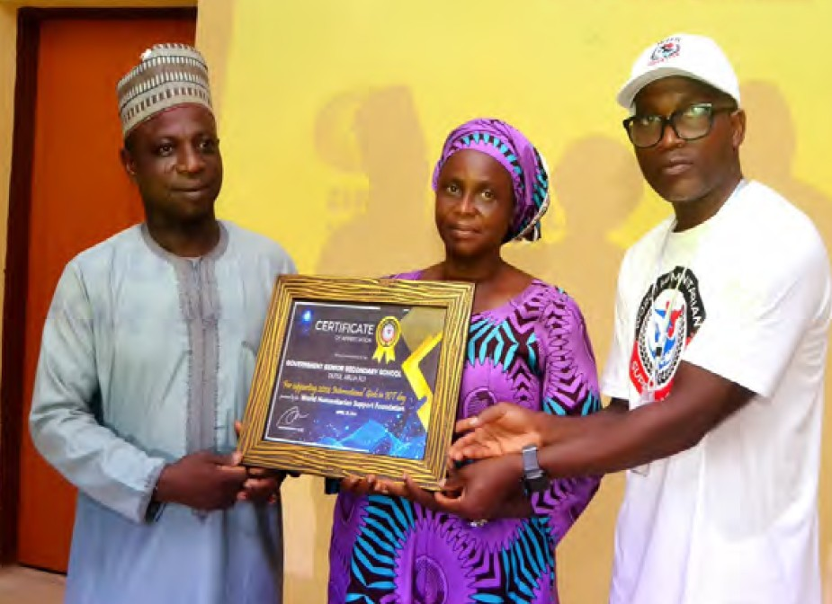

Create lasting impact
Help underserved learners and communities gain practical technology skills and recognised learning pathways.

Partners & sponsors
WHSF collaborates with companies, foundations, schools, donors and community organisations that share our commitment to technology access, practical education and inclusive opportunity.
Our partners and collaborators
We recognise organisations already represented in WHSF’s published partner records. Partnership status and recognition are reviewed before publication.


WHSF does not display sample or unconfirmed corporate logos as current partners.
Why partner with WHSF?
Help underserved learners and communities gain practical technology skills and recognised learning pathways.
Connect with learners, educators, communities and networks through mission-aligned programmes.
Demonstrate a credible commitment to education, inclusion, sustainability and responsible innovation.
Help bring devices, connectivity, mentorship and practical learning experiences closer to communities.
Define goals, reporting expectations, safeguarding and recognition together before delivery begins.
Partnership opportunities
Partnerships can be financial, technical, educational or in-kind and can be tailored to your organisation’s priorities and capacity.
Support Girls in ICT, robotics and drones, digital learning, AI career pathways or AgriSmart AI.
Contribute suitable devices, internet access, cloud resources or learning-space technology.
Help learners participate, complete programmes and document their skills.
Share technical, professional, evaluation or career knowledge with learners and programme teams.
Collaborate on workshops, bootcamps, innovation challenges and community outreach.
Co-design responsible, measurable initiatives with foundations, schools and public-interest institutions.
Programme records may overlap and should not be added into one beneficiary total.
Plan a partnership conversation
These planning estimates help begin a conversation. WHSF confirms budgets, delivery assumptions and final reach with each partner.
Estimated from $500 for learner access, e-learning support and certificate readiness.
Start a conversation
Share your priorities through WHSF’s secure contact form. Select partnership or sponsorship as the subject, and we normally respond within three business days.